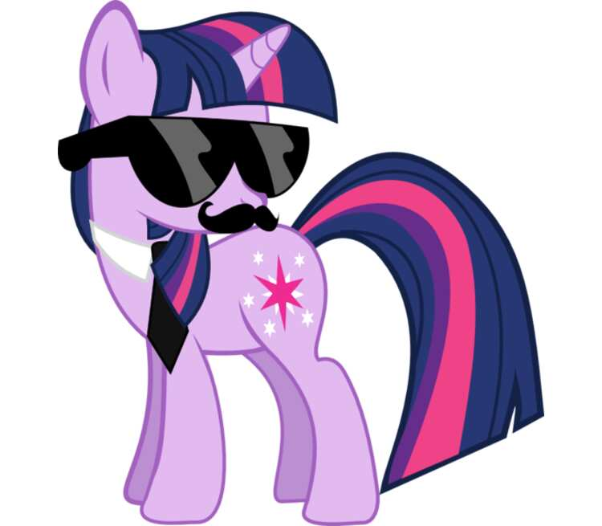
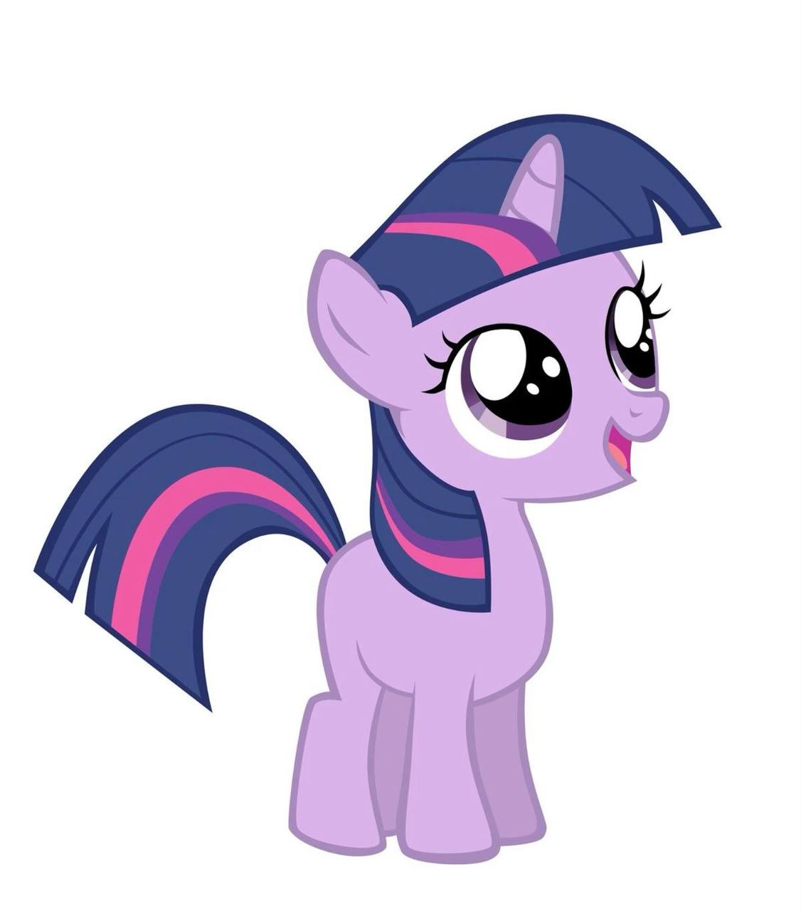

Твайлайт Спаркл — главная героиня «Мой маленький пони: Дружба — это чудо». Она также дочь Твайлайт Вельвет и Найт Лайт, младшая сестра Шайнинг Армор, невестка принцессы Кейденс и тётя по отцовской линии Фларри Харт.
В начале сериала Твайлайт и Спайк переезжают из своего дома в Кантерлоте в Библиотеку «Золотой дуб» в Понивилле, чтобы изучать магию дружбы, а в Королевстве Твайлайт — Часть 2 она получает собственный замок и титул «Принцесса дружбы». Она представляет элемент магии.
Прежде чем стать принцессой, Твайлайт регулярно отправляла отчёты о дружбе принцессе Селестии. В «Совином колодце», который заканчивается хорошо, она заводит ручную сову по имени Соволисиус. В «Последней проблеме» она является правительницей Эквестрии.
Твайлайт Спаркл живёт в башне в Кантерлоте, пока принцесса Селестия не отправляет её в Понивилль. В сопровождении Спайка Твайлайт проверяет, как город готовится к празднованию Летнего Солнца, и знакомится с остальными главными героями. Празднование прерывается, когда Найтмэр Мун, заклятый враг Селестии, возвращается к власти и угрожает погрузить Эквестрию во тьму. Твайлайт и остальные из «Шестёрки Мане» находят Элементы Гармонии и используют их, чтобы превратить Найтмэр Мун обратно в принцессу Луну. Принцесса Селестия разрешает Твайлайт остаться в Понивилле, чтобы изучать магию дружбы.
На протяжении всего сериала Твайлайт узнаёт о трудностях и радостях дружбы, периодически отправляя отчёты о дружбе принцессе Селестии. В редких случаях Твайлайт и её друзья объединяются, чтобы победить могущественных злодеев, таких как Дискорд, Королева Кризалис, Король Сомбра и Лорд Тирек.
В Волшебном таинственном исцелении Твайлайт завершает древнее незавершённое магическое заклинание, опираясь на своё глубокое понимание дружбы. Принцесса Селестия говорит Твайлайт, что та готова к следующему этапу своей жизни, и Твайлайт превращается в аликорна и получает титул принцессы.
Принцесса Твайлайт Спаркл становится «Принцессой Дружбы» в четвёртом сезоне, в эпизоде Королевство Твайлайт — часть 2. В девятом сезоне, в эпизоде Последняя проблема, она становится новой правительницей Эквестрии, заняв место Селестии и Луны, когда они уходят на покой.
Твайлайт рассказывает, как она получила свой знак отличия в «Хрониках знака отличия». Будучи кобылкой, она с большим интересом изучала магию и хотела поступить в Школу для одарённых единороговпринцессы Селестии, но её вступительный экзамен едва не закончился катастрофой, когда она не смогла волшебным образом высидеть драконье яйцо, как требовалось. Через мгновение после того, как Твайлайт сдалась, ударная волна от далёкого взрыва заставила её магию выйти из-под контроля и устроить хаос в экзаменационном зале. После того как появилась принцесса Селестия и разрядила обстановку, Твайлайт пришла в себя и обнаружила, что у неё появился знак отличия.
При первом появлении в сериале Твайлайт ведёт себя замкнуто. В начале первого эпизода она поспешно извиняется, когда её приглашают на вечеринку друга, чтобы она могла позаниматься в своей комнате в Кантерлоте. Позже она соглашается проследить за подготовкой к Празднику летнего солнца в Понивилле, но приходит в ужас, когда принцесса Селестия поручает ей «завести друзей». Искорка отвергает все предложения о дружбе, пока проверяет, всё ли готово, хотя во второй части премьеры она заводит дружбу с остальными Шестёркой Маневых и выражает желание остаться с ними в Понивилле даже после того, как выполнит свою задачу.

В «Починка забора» Твайлайт возвращается в Кантерлот и пытается извиниться перед своими бывшими друзьями за своё прошлое асоциальное поведение. Ей удаётся помириться с Твинклшайн, Лемон Хартс и Миниттой, но Мун Дэнсер отвергает её попытки. Минитта и Твайлайт сравнивают поведение Мун Дэнсер с тем, как раньше вела себя Твайлайт.
Твайлайт очень близка с остальными своими друзьями и Спайком. Она достаточно великодушна, чтобы протянуть руку помощи тем, кого считает достойными второго шанса, таким как Старлайт Глиммер.
В течение первых четырёх сезонов сериала Твайлайт живёт в библиотеке «Золотой дуб» в Понивилле и регулярно читает и систематизирует книги. Она приходит в восторг, увидев огромное количество книг в библиотеке Кристальной империи в «Кристальная империя — часть », а в «Девочки из Эквестрии: Забытая дружба» Твайлайт чуть не теряет сознание, когда узнаёт, что в библиотеке Кантерлота есть закрытый раздел. В Замке Мане-ия она с радостью обнаруживает древнюю библиотеку в Замке Двух Сестёр и решает провести там ночь, к большому огорчению Спайка.
Неудивительно, что на протяжении всего сериала Твайлайт демонстрирует интеллектуальную любознательность и глубокие знания по широкому кругу вопросов. В «Друзьях по осенней погоде»она ссылается на книги о беге, чтобы объяснить, как она заняла пятое место в марафоне, не имея опыта участия в забегах. Когда Трикси утверждает, что победила Большую Медведицу в «Разоблачителях хвастовства», Твайлайт проявляет интерес и изучает это существо в библиотеке. В «Затмении Луны», «Тестировании 1, 2, 3», «Потерянном сокровище Грифонстоуна» и других эпизодах Твайлайт демонстрирует глубокое знание истории Эквестрии. Она также проявляет интерес к художественной литературе, прочитав всю серию книг «Дерзкое решение».
Твайлайт старается сохранять рациональность даже в сложных или незнакомых ситуациях. В MMMystery на «Экспрессе дружбы» она указывает на недостатки в расследовании Пинки Пай и призывает её не выдвигать обвинения без доказательств. Когда «защитное» заклинание Твайлайт не помогает справиться с причудливыми явлениями, происходящими в «Милом яблочном крае»;в «Возвращение гармонии. Часть 1», она поручает своим друзьям выполнить ряд физических задач, которые помогут решить насущные проблемы.
Твайлайт склонна скептически относиться к заявлениям о сверхъестественном, например к вере её друзей в то, что Зекора — злая волшебница из Сплетен о Бридл, а также к предполагаемой способности Пинки предчувствовать события в ближайшем будущем в Чувствительной Пинки Кин. В Замке Мане-ия, когда звук церковного органа эхом разносится по залам Замка Двух Сестёр, Твайлайт отмахивается от предположений, что это может быть «Теневая пони», и ведёт своих друзей на поиски источника звука.

Родители Твайлайт — Твайлайт Вельвет и Найт Лайт. Родители Твайлайт впервые появляются в «Хрониках метки дружбы». В воспоминаниях они радостно кивают в знак согласия, когда принцесса Селестия предлагает сделать Твайлайт своей ученицей. Позже они появляются в «Свадьбе в Кантерлоте — часть 2», «Волшебном таинственном исцелении»;и «Кристаллизации — часть 2».
Мать Сумеречной Искорки похожа на знаменитую пони G1 Сумеречную из My Little Pony Special, а её причёска напоминает причёску Сумеречной. Отец Сумеречной Искорки похож на пони G1 по имени Найтлайт.
Твайлайт рассказывает, что у неё есть старший брат, Шайнинг Армор, в «Свадьбе в Кантерлоте — часть 1». Она поёт B.B.B.F.F. (Big Brother Best Friend Forever) — песню об их крепкой связи и о том, как сильно она скучает по нему после переезда в Понивилль. Шайнинг Армор, несмотря на то, что он очень занят своими обязанностями в Кристальной империи, всё же находит время для своей младшей сестры, которую он называет «Твайли». Седьмая Спаркл рассказывает, что с самого детства между ними было дружеское соперничество в форме конкурса «Лучший брат или сестра».
Младший приёмный брат Твайлайт, как указано в «Семи Спаркл». На протяжении всего сериала Спайк является помощником Твайлайт номер один и отправляет её письма принцессе Селестии для уроков дружбы. В «Семи Спаркл» Спайк чувствует себя обделённым из-за конкурса «Лучший брат» и рассказывает Флаттершай, что всегда считал Твайлайт и Шайнинг Армор своими братьями и сёстрами. В конце эпизода Сияющий Доспех и Твайлайт вручают Спайку корону «Верховный брат», поскольку оба считают Спайка «младшим братом, которого у них всегда не хватало».
Твайлайт рассказывает, что принцесса Кейденс присматривала за ней, когда она была жеребёнком, и у них есть песенка, которой они часто приветствуют друг друга: «Солнышко, солнышко, божьи коровки проснулись! Хлопай копытцами и немного потанцуй!» В конце Свадьбы в Кантерлоте — часть 2 Твайлайт становится невесткой Кейденс, когда та выходит замуж за Шайнинга Армора. Твайлайт любит проводить время с Кэденс, как показано в «Трое в толпе», когда Кэденс приходит к ней в гости.
В Эпизоде, где Пинки Пай всё знает Кейденс и Шайнинг Армор удивляют Твайлайт, сообщая ей, что у них будет ребёнок и что она станет тётей. На премьере шестого сезона она знакомится со своей новой племянницей Фларри Харт и приходит в ужас, узнав, что та — аликорн. Однако к концу Кристаллизации — Часть 2 Твайлайт очень привязывается к Фларри Харт и с нетерпением ждёт встречи с ней в Временах, когда они меняются местами. В Буре эмоций Твайлайт пытается провести время с Фларри, но это отнимает у неё много времени из-за её плотного графика.